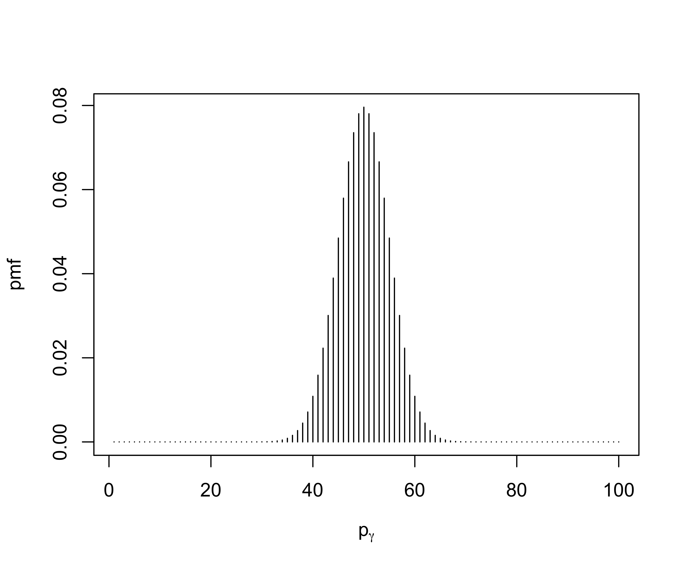

Lecture 15: Bayesian Multiple Testing
STA702
Merlise Clyde
Duke University
Normal Means Model
Suppose we have normal data with \(Y_i \mid \mu_i, \sigma^2 \overset{iid}{\sim} \textsf{N}(\mu_i, \sigma^2)\)
Multiple Testing \(H_{0i}: \mu_i = 0\) versus \(H_{1i}: \mu_i \neq 0\)
\(n\) hypotheses that may potentially be closely related, e.g. \(H_{01}\) no difference in expression of gene \(i\) between cases and controls, for \(n\) genes
Means Model based on a “Spike & Slab” Prior: \[\mu_i \mid \tau \overset{iid}{\sim} \pi_0 \delta_0 + (1 - \pi_0)g(\mu_i \mid 0, \tau)\]
need to specify
\(\pi_0\) Probability of \(H_{0i}\) or that \(\mu_{i} = 0\) (spike)
\(g\) “slab distribution”
concern: is that # errors blows up with \(n\) (\(n\) = # tests = dimension of \(\{\mu_i\}\) )
Approach 1: Prespecify \(\pi_0\)
seemingly non-informative choice?
\(\pi_0 = 0.5\)Let \[\gamma_i = \left\{ \begin{array}{c} 1 \text{ if } H_{1i} \text{ is true } \\ 0 \text{ if } H_{0i} \text{ is true } \end{array} \right.\]
\[\gamma^{(n)} = (\gamma_1, \gamma_2, \ldots, \gamma_n)^2 \qquad \text{ e.g. } \gamma^{(n)} = (0,1,0,0, \ldots, 1)^T\]
- model size \(p_\gamma = \sum_{i = 1}^n \gamma_i\) is the number of non-zero values. What does \(\pi_0 = 0.5\) imply about the number of times \(H_{1i}\) is true a priori?
Induced Distribution
if \(p_\gamma = \sum_{i = 1}^n \gamma_i\) with \(p(\gamma_i = 1) = 0.5\) then \(p_\gamma \sim \textsf{Binomial(n, 1/2)}\)
- Expect 1/2 of the hypotheses to be true a priori
Probabilities of no features or at least 1 feature?
\[p_\gamma \sim \textsf{Binomial(n, 1/2)}\]
probability of no features \(\gamma^{(n)} = (0,0,0,\ldots, 0)^T\) or \(p_\gamma = 0\) \[\Pr(p_\gamma = 0) = \pi_0^n = 0.5^n\]
approximately \(0\) for large \(n\)
Similarily, the probability of at least one feature is \(1 - 0.5^n \approx 1\)
Control Type I Errors
Suppose we want to fix \(\pi_0\) to protect against Type I errors blowing up as \(n\) increases \[\Pr( p_\gamma = \mathbf{0}_n) = \frac{1}{2} = \pi_0^n\]
“Bayesian Bonferroni Prior”
leads to \(\pi_0 = 0.5^{1/n}\) very close to 1 for large \(n\)! We would need overwhelming evidence in the data for \(\Pr(H_{1i} \mid y^{(n)})\) to not be \(\approx 0\)!
not a great idea to prespecify \(\pi_0\)!
Approach 2: Empirical Bayes
Estimate \(\pi_0\) from the data by maximizing the marginal likelihood
\[\begin{align} Y_i \mid \mu_i, \sigma^2 \mid \overset{ind}{\sim} \textsf{N}(\mu_i, \sigma^2) \\ \mu_i \mid \tau, \pi_0 & \overset{iid}{\sim} \pi_0 \delta_0 + (1 - \pi_0)\textsf{N}(\mu_i; 0, \tau) \end{align}\]marginal likelihood \[\begin{align*} \cal{L}(\pi_0, \tau) & = \int_{\mathbb{R}^n} \prod_{i = 1}^n \textsf{N}(y_i ; \mu_i, \sigma^2) \left\{\pi_0 \delta_0(\mu_i) + (1 - \pi_0)\textsf{N}(\mu_i; 0, \tau) \right\} d\mu_1 \ldots d\mu_n \\ & = \prod_{i = 1}^n \int_\mathbb{R} \textsf{N}(y_i ; \mu_i, \sigma^2) \left\{\pi_0 \delta_0(\mu_i) + (1 - \pi_0)\textsf{N}(\mu_i; 0, \tau) \right\} d\mu_i \end{align*}\]
Conjugate or nice setups we can integrate out \(\mu_i\) and then maximize marginal likelihood for \(\pi_0\) and \(\tau\)
Numerical integration (lab) or EM algorithms to get \(\hat{\pi}_0^{\textsf{EB}}\) and \(\hat{\tau}^{\textsf{EB}}\)
Expectation-Maximization (\(\sigma = 1\))
Introduce latent variables so that “complete” data likelihood is nice! (no integrals!) \[\begin{align} y_i \mid \gamma_i, \tau & \overset{iid}{\sim} \textsf{N}(0, 1)^{1 - \gamma_i} \textsf{N}(0, 1 + \tau)^{\gamma_i} \\ \gamma_i \mid \pi_0 & \overset{iid}{\sim} \textsf{Ber}(1 - \pi_0) \end{align}\]
Iterate: For \(t = 1, \ldots\)
M-step: Solve for \((\hat{\pi}_0^{(t)}, \hat{\tau}^{(t)}) = \arg \max\cal{L}(\pi_0, \tau \mid \hat{\gamma}^{(t-1)})\)
E-step: find the expected values of the latent sufficient statistics given the data, \(\hat{\pi}_0^{(t)}\) , \(\hat{\tau}^{(t)}\) (i.e. posterior expectation) \[\hat{\gamma}^{(t)} = \textsf{E}[\gamma_i \mid y, \hat{\pi}^{(t)}_0, \hat{\tau}^{(t)}]\]
Clyde & George (2000) Silverman & Johnstone (2004) for orthogonal regression
M-Step
log-likelihood \[\begin{align} \cal{L}(\pi_0, \tau) = & \sum_i (1 -\gamma_i) \log(\pi_0) + \gamma_i \log(1 - \pi_0) + \\ & \sum_i(1 - \gamma_i) N(y_i; 0, 1) + \gamma_i N(y_i; 0, 1 + \tau) \end{align}\]
plug in \(\hat{\gamma}_i^{(t)}\) above and maximize wrt \(\pi_0\) and \(\tau\)
\(\hat{\pi}_0^{(t)} = 1 - \frac{\sum_i\hat{\gamma}_i^{(t)}}{n}\)
\(\hat{\tau}^{(t)} = \max\{0, \frac{\sum_i \hat{\gamma}_i^{(t)} y_i^2}{\sum_i \hat{\gamma}_i^{(t)}} - 1\}\)
E-Step
Posterior distribution for \(\gamma_i \mid y_i, \hat{\tau}, \hat{\pi}\) \[\gamma_i \mid y_i, \hat{\tau}, \hat{\pi}_0 \mathrel{\mathop{\sim}\limits^{\rm iid}}\textsf{Ber}(\omega_{i})\]
- \(\omega_i = \frac{\cal{O}_i}{1 + \cal{O}_i}\) with posterior odds \(\cal{O}_i\) \[\begin{align} \cal{O}_i & = \frac{1 - \hat{\pi}^{(t)}_0}{\hat{\pi}^{(t)}_0} \times \textsf{BF}_{10} \\ \textsf{BF}_{10} & = \frac{p(y \mid \gamma_i = 1, \hat{\tau}^{(t)})}{p(y \mid \gamma_i = 0)} = \frac{1}{(1 + \hat{\tau}^{(t)})^{1/2}} e^{ \frac{1}{2} y_i^2 \frac{\hat{\tau}^{(t)}} {1 + \hat{\tau}^{(t)}}} \end{align}\]
Adding Noise
What happens to \(\hat{\pi}_0^{\textsf{EB}}\) if have all noise?
\(\hat{\tau} \to 0\) as \(n \to \infty\) (here \(n = 10000\)) (\(\hat{\tau}^{(t)} = \max\{0, \frac{\sum_i \hat{\gamma}_i^{(t)} y_i^2}{\sum_i \hat{\gamma}_i^{(t)}} - 1\}\) ) so distribution collapses to the same as the noise model
\(\textsf{BF}_{10} \to 1\) so \(\hat{\pi}_0^{(t)} = \hat{\pi}_0^{(0)}\)
\(\hat{\pi}_0^{\textsf{EB}}\) gets stuck at initial value of \(\pi_0\)!
posterior probability of \(H_{1i}\) not consistent as well as \(\pi_0\)
similar problems with convergence to a local mode with even with more features
Approach 3: Fully Bayes
Choose a prior for \(\pi_0\) (and \(\tau\)), simplest case \(\pi_0 \sim \textsf{Beta}(a,b)\)
Consider the thought experiment where we don’t know the first hypothesis but we know that the others are all null \(\gamma_j = 0\) for \(j = 2, \ldots, n\) \[\gamma^{(n)} = (?, 0,,\ldots, 0)^T\]
\(\gamma_i \sim \textsf{Bernoulli}(1 - \pi_0)\)
Update the prior for \(\pi_0\) to include the info \(\gamma_j = 0\) for \(j = 2, \ldots, n\) \[\begin{align} \pi(\pi_0 \mid \gamma_2, \ldots, \gamma_n) & \propto \pi_0^{a - 1} (1 - \pi_0)^{b -1} \prod_{j = 2}^n \pi_0^{1 - \gamma_j} (1 - \pi_0)^{\gamma_j}\\ \pi(\pi_0 \mid \gamma_2, \ldots, \gamma_n) & \propto \pi_0^{a + n -1 -1} (1 - \pi_0)^{b - 1} \end{align}\]
Beta Posterior
Posterior \(\pi_0 \mid \gamma_2, \ldots, \gamma_n \sim \textsf{Beta(a + n - 1, b)}\) with mean \[\textsf{E}[\pi_0 \mid \gamma_2, \ldots, \gamma_n] = \frac{a + n - 1}{a + n - 1 + b}\]
suppose \(a = b = 1\) (Uniform prior) \[\textsf{E}[\pi_0 \mid \gamma_2, \ldots, \gamma_n] = \frac{n}{n + 1}\]
implies probability of \(H_{01} \to 1\) and \(H_{11} \to 0\) as \(n \to \infty\) borrowing strength from other nulls
Multiplicity adjustment as in the EB case
Scott & Berger (2006 JSPI, 2010 AoS) show that above framework protects against increasing Type I errors with \(n\); We also get FDR control automatically
Induced Prior on \(p_{\gamma}\)
Exercise for the Energetic Student:
If \(p_{\gamma} \mid \pi_0 \sim \textsf{Binomial}(n, 1 - \pi_0)\) and \(\pi_0 \sim \textsf{Beta}(1,1)\)
What is the probability that \(p_\gamma = 0\)
What is the probability that \(p_\gamma = n\)
What is the distribution of \(p_\gamma\) ?
- This is a Beta-Binomial distribution!
- special case \(a = b = 1\) this is a discrete uniform on model size!
Bottomline: We need to “learn” key parameters in our hierarchical prior or the magic doesn’t work! Borrowing comes through using all the data to inform about “global” parameters in the prior, in this case \(\pi_0\) (and \(\tau\))!
Posteriors, Inference and Decisions
Posterior distribution of \(\mu_i\) is a spike at 0 and continous distribution
Joint posterior distribution of \(\mu_1, \ldots, \mu_n\) averaged over hypotheses “Model averaging”
select a hypothesis
Report posterior (summaries) conditional on a hypothesis
Issue is the winner’s curse !
Need to have coherent conditional inference given that you selected a hypothesis.
Don’t report selected hypotheses but report results under model averaging!
Choice of Slab
\[\mu_i \overset{iid}{\sim} \pi_0 \delta_0 + (1 - \pi_0)g(\mu_i \mid 0, \tau, H_{i1})\]
growing literature on posterior contraction in high dimensional settings as \(n \to \infty\) with “sparse signals”
posterior \(\pi(\mu^{(n)}) \mid y^{(n)})\)
Want \[\Pr(\mu^{(n)} \in \cal{N}_{\epsilon_n}(\mu_0^{(n)}) \mid y^{(n)})\to 1\]
assume that there are \(s\) features (fixed or growing slowly)
feature values are bounded away from zero
Want the posterior under the Spike and Slab prior to concentrate on this neighborhood (ie. probability 1 )
active area of research!